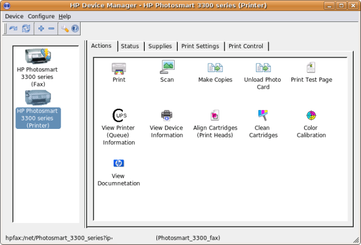

HP Linux Imaging and Printing (HPLIP) Help
Main Menu
Maintenance tasks (hp-toolbox)
To perform printer maintenance run hp-toolbox then click the Actions tab. From here you can perform the various maintenance functions including; Align Cartridges, Clean Cartridges, Color Calibration.
Not all printers support all functions.
